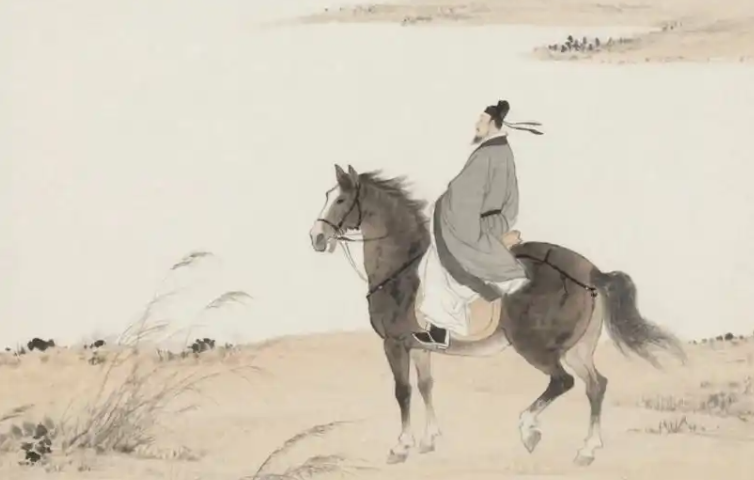

唐诗简介 | 李白 | 杜甫 | 白居易 | 李商隐 | 王维

李商隐（约813年—约858年），字义山，号玉谿生，又号樊南生，原籍怀州河内（今河南沁阳市）人，后随祖辈移居荥阳（今河南省郑州市），晚唐时期诗人。 他擅长诗歌写作，骈文文学价值也很高，是晚唐最出色的诗人之一，和杜牧合称“小李杜”，与温庭筠合称为“温李”，因诗文与同时期的段成式、温庭筠风格相近，且三人都在家族里排行第十六，故并称为“三十六体”。 其诗构思新奇，风格秾丽，尤其是一些爱情诗和无题诗写得缠绵悱恻，优美动人，广为传诵。但部分诗歌过于隐晦迷离，难于索解，至有“诗家总爱西昆好，独恨无人作郑笺”之说。因处于牛李党争的夹缝之中，一生很不得志。 死后葬于家乡沁阳（今河南焦作市沁阳与博爱县交界之处）。作品收录为《李义山诗集》。
李商隐的诗歌题材广泛，其中最具代表性的是无题诗和咏史诗。无题诗如《锦瑟》《无题・相见时难别亦难》，以迷离恍惚的意象、精巧华美的辞藻，抒写深挚缠绵的情感，千百年来引发无数解读，成为中国诗歌史上最富魅力的篇章。咏史诗如《贾生》《隋宫》，借古讽今，批判统治者的昏庸与奢侈，立意深刻，笔锋犀利。
在艺术上，李商隐善于用典，构思精密，语言凝练，音韵和谐。他发展了七言律诗的表现力，将象征、暗示、比兴等手法运用到极致，形成了 "沉博绝丽" 的独特风格。他的诗歌对后世西昆体、婉约词乃至朦胧诗都产生了深远影响，是唐诗向宋词过渡的重要桥梁。
————《锦瑟》|《无题·相见时难别亦难》|《夜雨寄北》|《贾生》|《登乐游原》————
锦瑟无端五十弦，一弦一柱思华年。
庄生晓梦迷蝴蝶，望帝春心托杜鹃。
沧海月明珠有泪，蓝田日暖玉生烟。
此情可待成追忆，只是当时已惘然。
相见时难别亦难，东风无力百花残。
春蚕到死丝方尽，蜡炬成灰泪始干。
晓镜但愁云鬓改，夜吟应觉月光寒。
蓬山此去无多路，青鸟殷勤为探看。
君问归期未有期，巴山夜雨涨秋池。
何当共剪西窗烛，却话巴山夜雨时。
宣室求贤访逐臣，贾生才调更无伦。
可怜夜半虚前席，不问苍生问鬼神。
向晚意不适，驱车登古原。
夕阳无限好，只是近黄昏。
©2026年终末列车组 联系我们